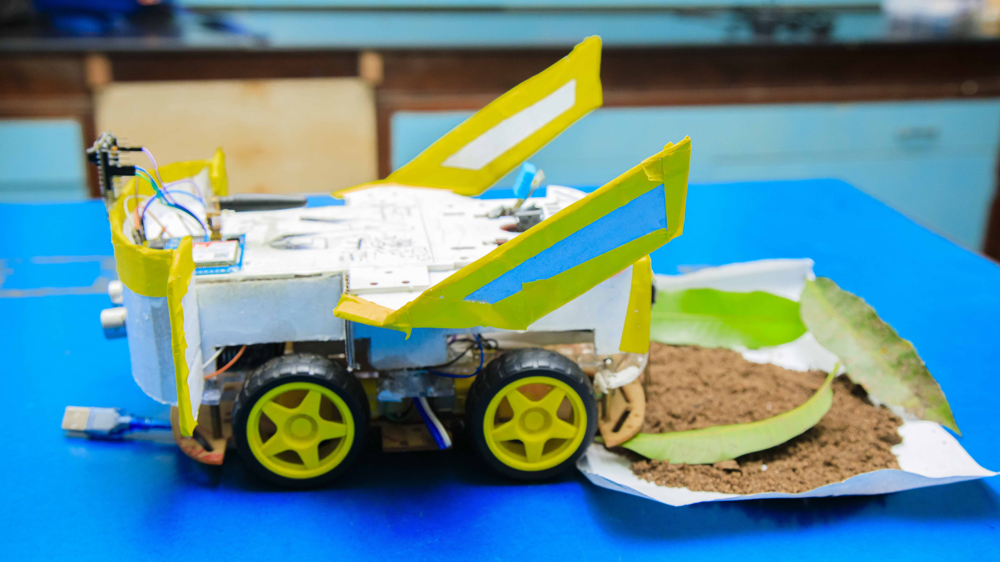

AgroGuard is a modern project centered on advanced AI and robotics technology aimed at improving farming and protecting crops from pests and diseases quickly and efficiently. It was an idea by students of Azania Secondary School seeking to bring significant change to the agriculture sector in Tanzania and beyond.
Founded in 2024 by passionate students, AgroGuard aims to bring innovative solutions capable of detecting and combating agricultural challenges using AI and robotics. Our goals are to help small and medium farmers increase yields, reduce losses, and ensure food security for communities.
We believe in innovation, collaboration, and sustainable development. We strive to bring high-tech solutions to farmers using affordable equipment and user-friendly systems.
Our team comprises students with expertise in AI, mechanical engineering, and programming. We are proud to be part of significant changes in agriculture.
For inquiries, assistance, or collaboration, please contact us via email: info@agroguard.co.tz or phone: +255754 312 753 - Madam Mwambeso.